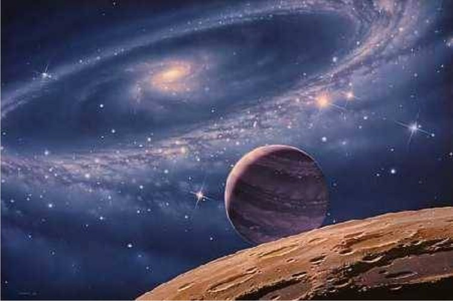
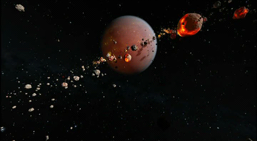

Varsta Universului

Calculele din 2009 arata ca vârsta universului este de 13,75 ± 0,17 miliarde de ani. Astrofizicianul George Gamow si studensii sai au ajuns la concluzia ca unele elemente chimice din universul de azi provin din primele timpuri ale formarii acestuia. Unele radiatii, care se presupune ca dateaza din perioada big bang-ului, înca mai circula prin univers. S-a mai descoperit ca cele mai usoare elemente ca hidrogenul, deuteriul si heliul au fost primele elemente în univers, iar celelalte elemente mai grele s-au format ulterior. Cercetatorii sustin ca elementele mai grele decât heliul si mai usoare decât fierul s-au format în procesul nuclear în stele, iar cele mai grele elemente (mai grele decât fierul) s-au format în urma exploziilor supernovelor.
Alte estimari: Unii specialisti apreciaza ca aceasta vârsta se poate determina numai aproximativ si rezultatul este în functie de metoda folosita. Una din metode se bazeaza pe miscarea galaxiilor, mai precis pe faptul ca miscarea lor este proportionala cu distanta, si arata ca „începutul universului” se situeaza cu 15 – 20 de miliarde de ani în urma. Si Georges Abell de la Universitatea din California, S.U.A., este de parere ca vârsta universului ar fi cuprinsa între 15 si 20 de miliarde de ani, iar dupa Sandage si Tammann aceasta cifra ar fi exact 19,5 miliarde de ani.